WebMatrix でほかの Web サイトのデザインをパク……じゃなくて、参考にさせていただく
公開日：
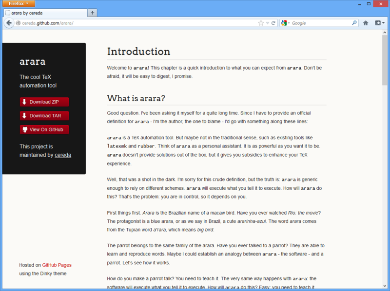
ちょっと調べ物をしていて、http://cereda.github.com/arara/ というサイトを見つけたのだけど、このデザインがシンプルながら結構いけているな、と思った。
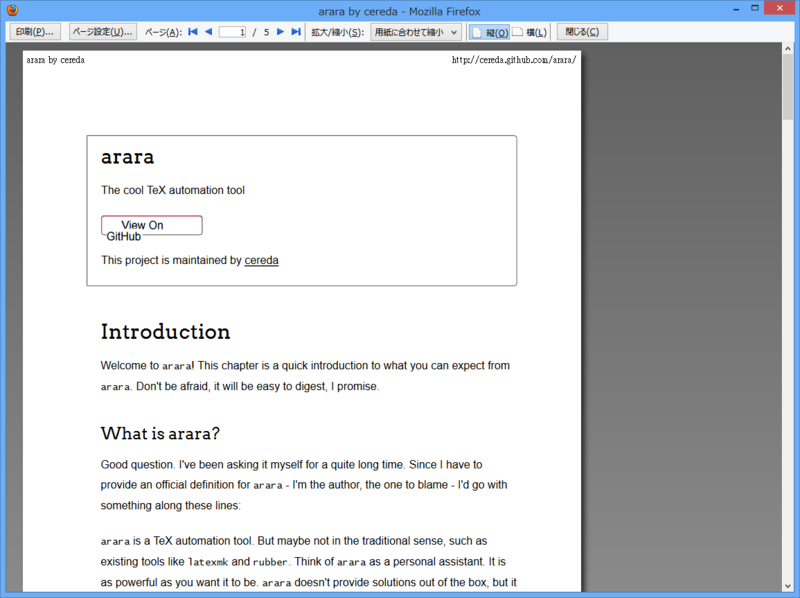
トリッキーなマークアップが少なくて、ちゃんとセマンティック。印刷時の見栄えも素直だ。
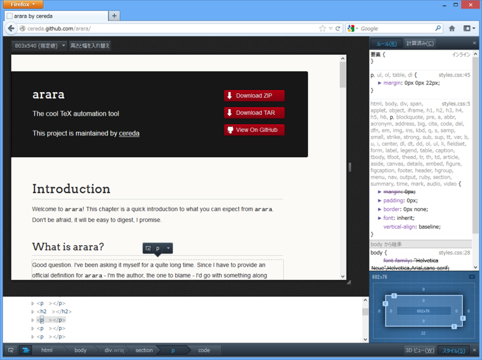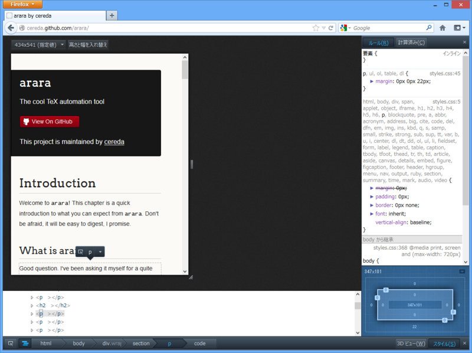
なにより素晴らしいのはレスポンシブなところ。ブラウザーの横幅に応じて、デザインが適したものに変わる。
多少気になるところもないとは言えないけれど、これはぜひパクらせて参考にさせていただきたい。
まずはダウンロード

なにはともあれ、まずはダウンロードやな。“Web ページ、完全”で HTML とそのほかのリソース（CSS/JavaScriptや画像ファイルなど）をゲット。
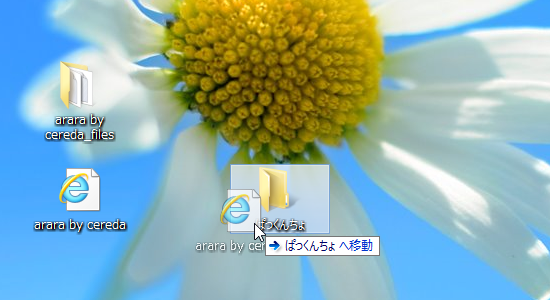
次に作業用のフォルダを作って、ダウンロードした HTML ファイルを移動させる。リソースが保存されたフォルダ（今回の場合“arara by cereda_files”フォルダ）は、NTFS の“代替データストリーム”という仕組みで関連付けられているので、HTML ファイルを移動させればそれについてくる。
作業フォルダの中身はこんな感じになっているはず。
作業フォルダを Web サイトとして開く
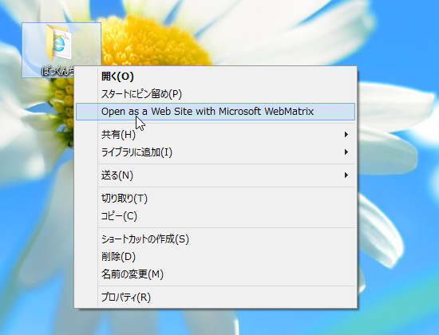
続いて、これを WebMatrix で開く。フォルダのコンテクストメニューから［Open as a Web Site with Microsoft WebMatrix］を選択しよう。
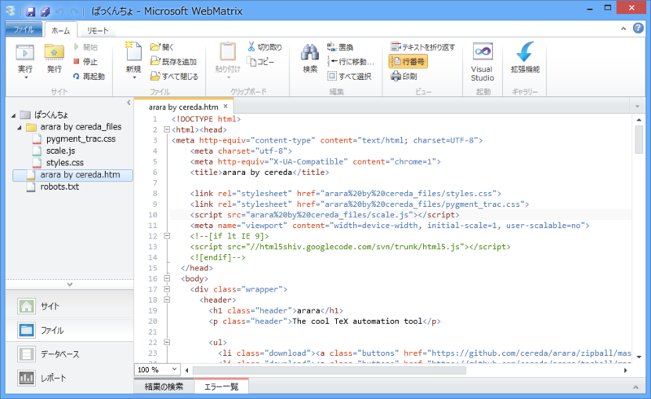
これでやりたい放題だな！
少し手を入れる
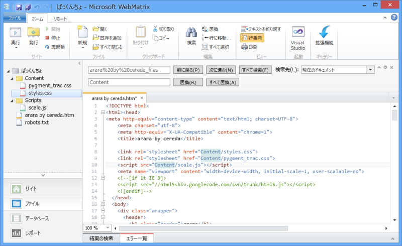
さすがにこのままホスティングサービスへアップロードして使うのはダサいので、少しだけ手を入れよう。
ASP.NET では、
- Scripts：JavaScript ファイルなどを格納
- Content：CSS ファイルなどを格納
するのが慣例となっているようなので、それにあわせてファイルの移動とリンクの書き換えを行う。テキストの検索・置換機能を活用するとよいよ。
ただの HTML ページから ASP.NET Web ページへ
ここからは個人的なおすすめなのだけど、ASP.NET Web ページのテンプレートにしてしまえば、Web サイト全体のデザインを共通化できていいと思う。

このテーマの場合、
@{
Layout = "_SiteLayout.cshtml";
}
残った“arara by cereda.htm”は“_SiteLayout.cshtml”へリネームし、切り取った
<section> @RenderBody() </section>
と書き換えておく。これでレイアウトと内容の分離が完成した。
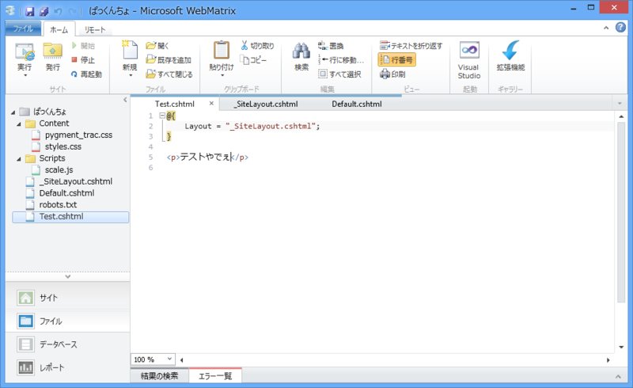
ためしに Test.cshtml をこんな感じに作って、http://***/Test を表示させれば、
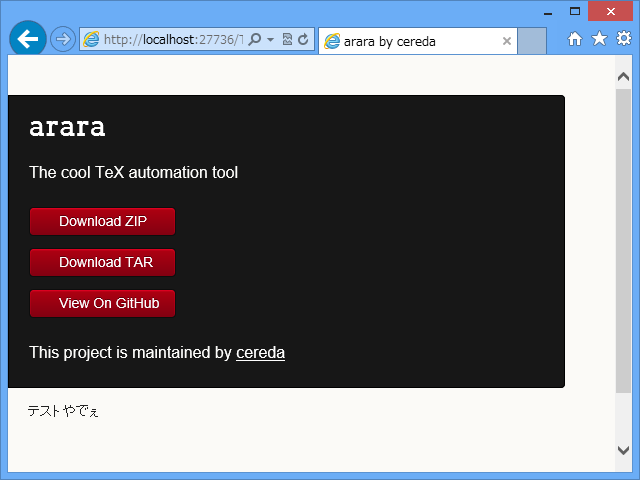
こんな感じになる。
ちなみに、なぜ“_SiteLayout.cshtml”などとファイル名の先頭に“_”を入れているのかについては、以下のリンクを参考にされたい。
ASP.NET Web Pages v2 へアップデート
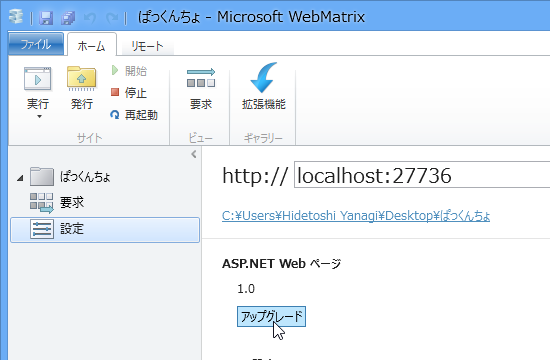
話は前後するけど、サイトの設定で ASP.NET Web Pages を v2 にアップデートしておくと少し幸せになれる。たとえば、
<link rel="stylesheet" href="~/Content/styles.css"> <link rel="stylesheet" href="~/Content/pygment_trac.css"> <script src="~/Scripts/scale.js"></script>
という記法が使えるようになる。v1 のころは“href="Url.Content("~/Content/styles.css")"”と書いていたと思うのだけど、v2 では“Url.Content()”が省略できるようになっているんだね。
“~（チルダ）”は Web サイトのルートを表す。たとえば、ルートが http://sample.com/sample/ だったら、~/Content/styles.css は http://sample.com/sample/Content/styles.css になる。
魔改造の結果
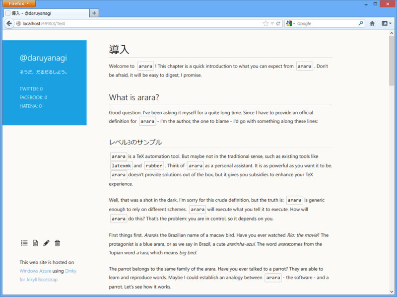
自分の場合は、ちょっとメトロ（死）風の色使いにしてみた。そんなに大きな改修はしていないのだけど、オリジナルとはまったく雰囲気が違うでしょ？
オチ。
ちなみに、わざわざこんなことしないでも GitHub - sodabrew/theme-dinky: The Dinky theme for GitHub pages, ported to Jekyll Bootstrap. でテーマファイルは配布されている。使わせてもらう場合は、クレジットぐらい掲載するといいんじゃないかな。